"If 15 runs are needed off the last over, pressure is on the bowler, not on MS Dhoni."
Less than thirty years before that enchanting Saturday night when Ravi Shastri’s voice rang through television sets all over India, when even the spunky and exuberant Indian youth showed more interest in an old-school CRT television at a local chai ki dukaan than the dance-floor at a pub, a pump-operator in Ranchi awaited the birth of his third child.
"Dhoniiiii finishes off in style. A magnificent strike into the crowd. India lift the World Cup after 28 years. The party's started in the dressing room. And it’s an Indian captain, who’s been absolutely magnificent, in the night of the final."
Any cricket fan worth his salt just read this in Ravi Shastri's most dramatic voice, as Mahendra Singh Dhoni enchanted the Wankhede on the night of 2nd April 2011.BACKGROUND :
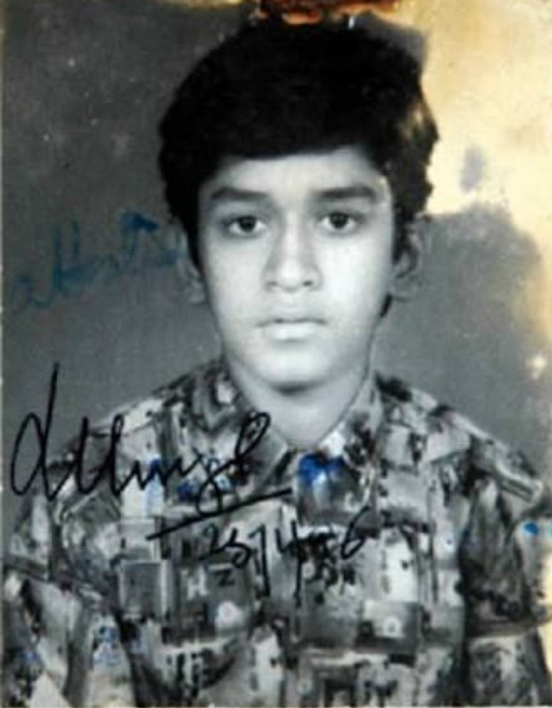
Hailing from Jharkhand, Mahendra Singh Dhoni’s rise through the ranks into international cricket is a tale of rebellion, extraordinary merit, perseverance, and, most of all, belief. After being scouted on the whims of his school P.E. teacher as a wicketkeeper, Dhoni created whispers in the cricketing circles of Ranchi - a teenaged boy with no measurable upper-body strength clearing boundaries against some of the best fast bowlers of the district. However, the system failed him as he found it difficult to make the cut against candidates of the more affluent A-tier states. Consequently, in a desperate move, he joined the Railways Ranji team and started to work as a ticket collector at the Kharagpur railway station to make ends meet. Nevertheless, in a few months, the stars started to align themselves for the precocious wunderkind from Ranchi. Inspired by the KSCA, the BCCI started a country-wide Training Research Development Wing to scout talent from the more financially backward states. Dhoni immediately caught the eyes of the scouts and was sent on an A tour to Kenya, where his talent burst forth for the world to see as he showcased his batting pyrotechnics against world-class bowlers in alien conditions. He immediately shot to national reckoning and was selected for the tour of Bangladesh in November 2004. By then a broad 22-year-old with long locks, Dhoni’s India career got off to an inauspicious start, as he scored a duck in his first ODI and a string of low scores followed. However, the selectors and the then-captain Sourav Ganguly decided to persist with him and gave him an extended run. Dhoni repaid their faith with an exhibition of his charisma and audacious stroke-play in his fifth ODI against Pakistan, who certainly didn’t see the butchery coming, as he butchered his way to 148 at Vishakhapatnam. Later in 2005, he went one step further bludgeoning his way to a brutal 183* in Jaipur to make a mockery of a 300-run chase against a Sri Lankan attack that looked aghast at his bizarre-but-effective stroke-play and the unparalleled physical power that he imparted on the ball.
Records Tally :
| Competition | Test | ODI | T20I |
|---|---|---|---|
| Matches | 90 | 350 | 98 |
| Runs scored | 4,876 | 10,773 | 1,617 |
| Batting average | 38.09 | 50.57 | 37.60 |
| 100s/50s | 6/33 | 10/73 | 0/2 |
| Top score | 224 | 183* | 56 |
INTERNATIONAL RECORDS
- Dhoni is third captain (and the first non-Australian) overall to win 100 games.
- Fourth Indian to reach 10,000 ODI runs after Sachin Tendulkar, Sourav Ganguly & Rahul Dravid and also the second wicket-keeper to reach the milestone.
- First player to pass 10,000 runs in ODI cricket with having a career average of over 50.
- Dhoni has the fifth highest batting average (51.09), among cricketers with more than 5,000 runs and the second highest batting average among players with an aggregate of over 10,000 runs.
- Most career runs in ODI history when batting at number 6 position (4031)
- Only player to score more than one hundred in ODI cricket when batting at number 7 position or lower (Dhoni has 2 centuries at number 7).
- Most not outs (82) in ODIs.
- First Indian and fifth overall to hit 200 sixes in ODIs.
- Dhoni's 183* against Sri Lanka in 2005 is the highest score by a wicket-keeper.
- Dhoni's 113 against Pakistan in Chennai in 2012 is the highest by a captain batting at number 7.
- Dhoni and Bhuvneshwar Kumar were involved in a partnership of 100 not out against Sri Lanka, which is India's highest eighth wicket partnership in ODIs.
- Most unbeaten innings and highest average (among batsmen with more that 20 such innings) in successful ODI run-chases.
- Holds the record for playing the most number of matches in ODI history as captain who has also served as a wicket-keeper(200)
- Dhoni holds the records of the most dismissals in an innings (6) and career (432) by an Indian wicket-keeper.
- Dhoni has the most stumpings (120) by any wicket-keeper in an ODI career and is so far the only keeper to pass 100 stumpings
- First Indian wicket-keeper to take 300 ODI catches and fourth wicket-keeper in the world to achieve the feat.
- Under Dhoni's captaincy, India topped the Test cricket rankings for the first time, in 2009.
- Dhoni is the most successful Indian Test captain with 27 Test wins, eclipsing Sourav Ganguly's record of 21.
- Dhoni has the most overseas Test defeats by an Indian captain, with 15.
- Dhoni is the first Indian wicket-keeper to complete 4,000 Test runs.
- Dhoni's 224 against Australia in Chennai is the third highest score by an Indian captain.[164] En route to 224, Dhoni registered the highest Test score by an Indian wicket-keeper when he was on 193, beating Budhi Kunderan's 192. It was also the highest score by a wicket-keeper–captain beating Englishman Alec Stewart's 164.
- Dhoni's maiden century against Pakistan in Faisalabad (148) is the fastest century scored by an Indian wicket-keeper, and fourth overall.
- After hitting a six in third Test against England in Southampton, Dhoni completed 50 sixes as a captain, an Indian record.
- Dhoni, with 294 dismissals in his career, ranks first in the all-time dismissals list by Indian wicket-keepers.
- honi has the most stumpings(38) by any wicket-keeper in a Test career.
- Dhoni shares the record for most dismissals in an innings (6, with Syed Kirmani) and in a match (9) by an Indian wicket-keeper.
- Most wins in T20Is as captain (41)
- Most matches as captain in T20Is(72)
- Most matches in T20I history as both captain and wicket-keeper (72)
- Most consecutive T20I innings without a duck (84).
- Dhoni holds the record for playing the most T20I innings (76) and scored the most runs(1,153) before scoring a fifty.
- Most dismissals as wicket-keeper in T20Is
- Most catches as wicket-keeper in T20Is
- Most stumpings as wicket-keeper in T20Is
- Most catches as wicketkeeper in a T20I innings (5)
MS Dhoni and his ICC Truimphs :
"It took 7 years for MS Dhoni to win all the ICC Trophies"
Ms Dhoni was chosen to lead India in first ever World T20 in 2007. He made his captaincy debut against Scotland but the match was washed off. Thereon, he led India to the ICC World Twenty 20 trophy in South Africa, with a victory over arch-rivals Pakistan in an intensely fought final on 24 September 2007, and became the second Indian captain to have won a World Cup in any form of cricket, after Kapil Dev.
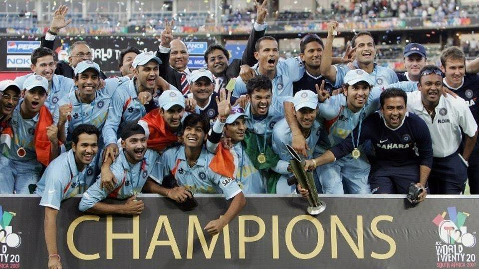
India won the toss and chose to bat on what was considered to be a traditionally batsman-friendly pitch at the Bullring.Umar Gul took the wickets of both Yuvraj Singh and Mahendra Singh Dhoni, leaving India with 157/5 in 20 overs; only Gautam Gambhir (75 from 54 balls) produced a notable innings. A 21-run over from Sreesanth swung the game towards Pakistan. However, Irfan Pathan (3–16) and Joginder Sharma (2–20) slowed the scoring dramatically. With Pakistan needing 54 from 24 balls, Misbah-ul-Haq hit 3 sixes off Harbhajan Singh in one over. Sreesanth was also dispatched for 2 sixes but took the wicket of Sohail Tanvir, as Pakistan went into the last over needing 13 runs to win, with only 1 wicket remaining. Joginder Sharma bowled a wide first ball, followed by a dot ball. Misbah followed by taking six off a full-toss; Pakistan needed just 6 runs to win from the last four balls. Misbah attempted to hit the next ball with a paddle-scoop over fine leg, but he only managed to sky the ball, and it was caught at short fine-leg by Sreesanth, leaving Pakistan all out for 152 runs. Irfan Pathan was awarded the Man of the Match for his spell, which included 3 wickets for 16 runs, including that of Man of the Series, Shahid Afridi
Yuvraj Singh was the 1st t20 batsman to score 6 sixes in an over against England
On this day in 2011, MS Dhoni gave India a billion reasons to smile
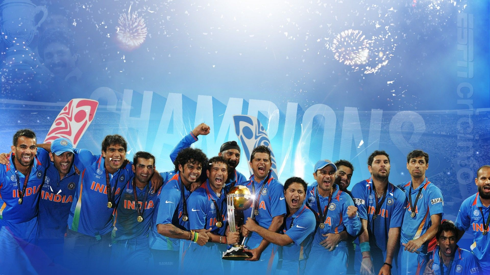
On April 2, 2011, MS Dhoni gave a billion Indian cricket fans plenty of joy as he guided India to World Cup glory at home in the final against Sri Lanka at the Wankhede stadium in Mumbai.
MS Dhoni was on strike. Nuwan Kulasekara was the bowler. It was the second ball of the 49th over. India required four runs from 11. Kulasekara bowls a full ball and Dhoni winds up to deposit the ball into the stands at long on. At that moment, a billion Indian fans cheered and celebrated. History was made. After 28 years, on April 2, 2011, India had finally won the World Cup after beating Sri Lanka by six wickets in the final.
Like I always say, chase your dreams because dreams do come true, and this was one of those moments in my life when it happened. pic.twitter.com/oNWKsYr6sw
— Sachin Tendulkar (@sachin_rt) April 2, 2017
It was the last world cup of "god of cricket"
The win was special for many reasons. India became the first team to win a World Cup at home and they became the only team to win the 60-over World Cup and the 50-over World Cup. For Dhoni, he stamped his brilliance on the big stage and continued his successful run in global tournaments, having won the inaugural ICC World Twenty20 in South Africa in 2007. For Sachin Tendulkar, India’s greatest batsman, it was another major addition to his list of achievements.
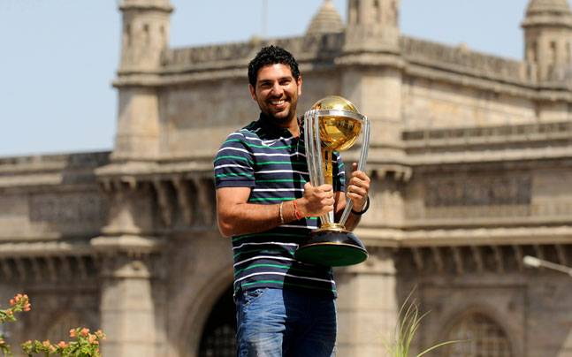
He was the part of both 2007 and 2011 world cups.
The player-of-the-tournament, Yuvraj Singh presented an inspiring tale of his true love for the game of cricket. Besides 362 runs at an average of 90.50 and 15 wickets in nine matches of the World Cup, a revelation that he was diagnosed with a cancerous tumor in his left lung made him a true white hat.
Following the World Cup triumph, the left-handed batsman underwent chemotherapy treatment in Boston and Indianapolis and made a comeback to the international cricket in 2012.
India had been riding the wave of success leading into the 2011 World Cup. They had been performing consistently and had tremendous momentum heading into the tournament. In their opening game against Bangladesh in Dhaka, centuries from Virender Sehwag (175) and Virat Kohli (100) ensured that the team got off to a great start with a 87-run win.
In India’s second game against England, there was drama. Tendulkar’s magnificent 120 was almost negated by Andrew Strauss’ majestic 158. However, after 676 runs, there was no clear cut winner as the game ended in a tie. After victories over Ireland and Netheralands, India took on South Africa. Tendulkar notched up his 99th international century but a calamitous collapse of 9/29 saw South Africa chase 297 with only three wickets in hand. Yuvraj Singh came to the fore with a dazzling hundred against West Indies in Chennai as India rounded off their league campaign with an 80-run win.
In the high-voltage clash against Australia in Ahmedabad, Ricky Ponting’s 104 helped the three-time defending champions reach 260/6. But Yuvraj, who had picked up 2/44, blasted 57 off 65 balls as India registered a win over Australia in a World Cup after 24 years. Heading into the massive game against Pakistan, Tendulkar was repreived four times as he went on to make 85. Pakistan could not mount a challenge and they suffered their fifth loss to India in this tournament.
Having entered the final for the first time since 2003, India faced Sri Lanka and Kumar Sangakkara’s team chose to bat. Mahela Jayawardene’s magnificent 107 helped Sri Lanka to 274/7 and it looked like they would clinch the title after dismissing Sehwag and Tendulkar cheaply. Gautam Gambhir steadied the ship with a 83-run stand with Virat Kohli before Kohli was dismissed for 34. However, MS Dhoni promoted himself up the order and it proved to be a masterstroke.
Gambhir and Dhoni turned the tables with a magnificent 109-run stand. The Indian skipper notched up his first World Cup fifty but Gambhir missed his century by three runs as he was bowled by Thisara Perera for 97. However, Dhoni led from the front and sealed the title with a brilliant, unbeaten knock of 91. After Kapil Dev’s team had put India on the world cricket map with their win in the 1983 World Cup in Lord’s against West Indies, Dhoni’s achievements in 2011 ensured that a foundation for India’s global domination would be laid.
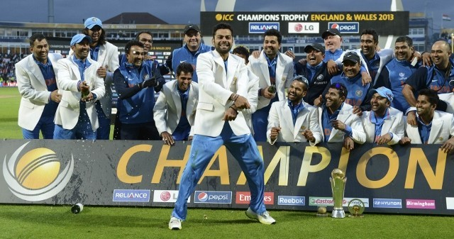
Exactly six years ago on this day, India defeated hosts England to clinch their second ICC Champions Trophy title at Edgbaston. With that thrilling win, India also became the second team after Australia to win the ICC Champions Trophy more than one time.
With this triumph, MS Dhoni became the first captain in history to win all three major ICC trophies - World Cup in 2011, World T20 in 2007 and 2013 Champions Trophy.
The tournament was contested by 8 teams divided into two groups. Group A had England, Sri Lanka, New Zealand, and Australia, while Group B had India, Pakistan, South Africa and West Indies.
New Zealand and Australia were knocked out of the competition in the first round itself, with Australia failing to win any match. In Group B, India proved to be a dominant force against all their opponents.
Both England and India had qualified for the final after crushing wins over South Africa and Sri Lanka in the two semi-finals of ICC Champions Trophy 2013.
England's inclement weather had already affected the big final between hosts England and India as the match was reduced to 20-overs-a-side due to rain. India crawled their way to 129/7 after 20 overs, after being put to bat by England on a slow and turning track.
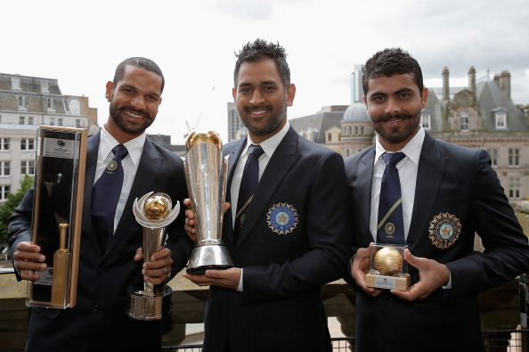
Shikhar Dhawan with the Golden Bat,MSD with the trophy and Sir Jadeja with the Golden Ball
Kohli made 43 and Jadeja slammed 33 runs to help India post a competitive total in Birmingham. Ravi Bopara was the hero of the day with the ball for England with figures of 3/20 as he accounted for the prized wickets of Dhawan, Raina, and Dhoni.
Ashwin and Jadeja provided India early breakthrough by removing Alastair Cook and Jonathan Trott. But Eoin Morgan and Ravi Bopara had other ideas as the duo stitched together a 64-run stand to give England more than a chance to fancy their chance to lift the trophy. It was then that MS Dhoni played a masterstroke by bringing Ishant Sharma, who was not having a good day, in the attack.
Ishant, who had leaked 32 runs in his first three overs, dismissed both batsmen and ended England's prolonged search for an international one-day title. Finally, when the last ball was bowled of the 20 over, India won the match by 5 runs and won the ICC Champions Trophy 2013 and celebrated like never before.
Back to top
Ms Dhoni was chosen to lead India in first ever World T20 in 2007. He made his captaincy debut against Scotland but the match was washed off. Thereon, he led India to the ICC World Twenty 20 trophy in South Africa, with a victory over arch-rivals Pakistan in an intensely fought final on 24 September 2007, and became the second Indian captain to have won a World Cup in any form of cricket, after Kapil Dev.
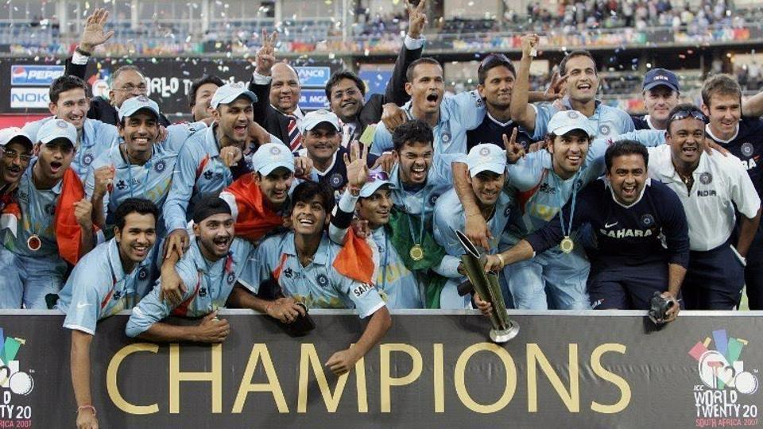
India won the toss and chose to bat on what was considered to be a traditionally batsman-friendly pitch at the Bullring.Umar Gul took the wickets of both Yuvraj Singh and Mahendra Singh Dhoni, leaving India with 157/5 in 20 overs; only Gautam Gambhir (75 from 54 balls) produced a notable innings. A 21-run over from Sreesanth swung the game towards Pakistan. However, Irfan Pathan (3–16) and Joginder Sharma (2–20) slowed the scoring dramatically. With Pakistan needing 54 from 24 balls, Misbah-ul-Haq hit 3 sixes off Harbhajan Singh in one over. Sreesanth was also dispatched for 2 sixes but took the wicket of Sohail Tanvir, as Pakistan went into the last over needing 13 runs to win, with only 1 wicket remaining. Joginder Sharma bowled a wide first ball, followed by a dot ball. Misbah followed by taking six off a full-toss; Pakistan needed just 6 runs to win from the last four balls. Misbah attempted to hit the next ball with a paddle-scoop over fine leg, but he only managed to sky the ball, and it was caught at short fine-leg by Sreesanth, leaving Pakistan all out for 152 runs. Irfan Pathan was awarded the Man of the Match for his spell, which included 3 wickets for 16 runs, including that of Man of the Series, Shahid Afridi
Yuvraj Singh was the 1st t20 batsman to score 6 sixes in an over against England
On this day in 2011, MS Dhoni gave India a billion reasons to smile
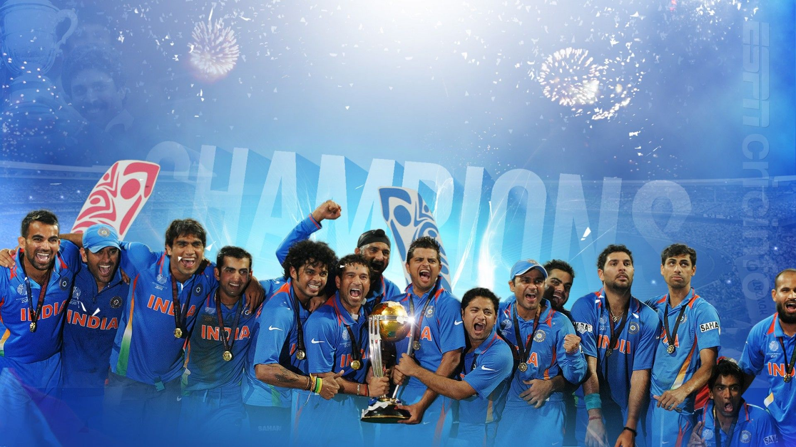 On April 2, 2011, MS Dhoni gave a billion Indian cricket fans plenty of joy as he guided India to World Cup glory at home in the final against Sri Lanka at the Wankhede stadium in Mumbai.MS Dhoni was on strike. Nuwan Kulasekara was the bowler. It was the second ball of the 49th over. India required four runs from 11. Kulasekara bowls a full ball and Dhoni winds up to deposit the ball into the stands at long on. At that moment, a billion Indian fans cheered and celebrated. History was made. After 28 years, on April 2, 2011, India had finally won the World Cup after beating Sri Lanka by six wickets in the final.
Like I always say, chase your dreams because dreams do come true, and this was one of those moments in my life when it happened. pic.twitter.com/oNWKsYr6sw
— Sachin Tendulkar (@sachin_rt) April 2, 2017
The win was special for many reasons. India became the first team to win a World Cup at home and they became the only team to win the 60-over World Cup and the 50-over World Cup. For Dhoni, he stamped his brilliance on the big stage and continued his successful run in global tournaments, having won the inaugural ICC World Twenty20 in South Africa in 2007. For Sachin Tendulkar, India’s greatest batsman, it was another major addition to his list of achievements.
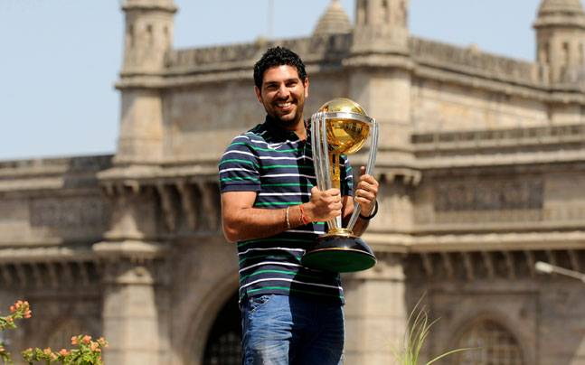
The player-of-the-tournament, Yuvraj Singh presented an inspiring tale of his true love for the game of cricket. Besides 362 runs at an average of 90.50 and 15 wickets in nine matches of the World Cup, a revelation that he was diagnosed with a cancerous tumor in his left lung made him a true white hat. Following the World Cup triumph, the left-handed batsman underwent chemotherapy treatment in Boston and Indianapolis and made a comeback to the international cricket in 2012.
India had been riding the wave of success leading into the 2011 World Cup. They had been performing consistently and had tremendous momentum heading into the tournament. In their opening game against Bangladesh in Dhaka, centuries from Virender Sehwag (175) and Virat Kohli (100) ensured that the team got off to a great start with a 87-run win. In India’s second game against England, there was drama. Tendulkar’s magnificent 120 was almost negated by Andrew Strauss’ majestic 158. However, after 676 runs, there was no clear cut winner as the game ended in a tie. After victories over Ireland and Netheralands, India took on South Africa. Tendulkar notched up his 99th international century but a calamitous collapse of 9/29 saw South Africa chase 297 with only three wickets in hand. Yuvraj Singh came to the fore with a dazzling hundred against West Indies in Chennai as India rounded off their league campaign with an 80-run win.
In the high-voltage clash against Australia in Ahmedabad, Ricky Ponting’s 104 helped the three-time defending champions reach 260/6. But Yuvraj, who had picked up 2/44, blasted 57 off 65 balls as India registered a win over Australia in a World Cup after 24 years. Heading into the massive game against Pakistan, Tendulkar was repreived four times as he went on to make 85. Pakistan could not mount a challenge and they suffered their fifth loss to India in this tournament.
Having entered the final for the first time since 2003, India faced Sri Lanka and Kumar Sangakkara’s team chose to bat. Mahela Jayawardene’s magnificent 107 helped Sri Lanka to 274/7 and it looked like they would clinch the title after dismissing Sehwag and Tendulkar cheaply. Gautam Gambhir steadied the ship with a 83-run stand with Virat Kohli before Kohli was dismissed for 34. However, MS Dhoni promoted himself up the order and it proved to be a masterstroke.
Gambhir and Dhoni turned the tables with a magnificent 109-run stand. The Indian skipper notched up his first World Cup fifty but Gambhir missed his century by three runs as he was bowled by Thisara Perera for 97. However, Dhoni led from the front and sealed the title with a brilliant, unbeaten knock of 91. After Kapil Dev’s team had put India on the world cricket map with their win in the 1983 World Cup in Lord’s against West Indies, Dhoni’s achievements in 2011 ensured that a foundation for India’s global domination would be laid.
With this triumph, MS Dhoni became the first captain in history to win all three major ICC trophies - World Cup in 2011, World T20 in 2007 and 2013 Champions Trophy.
The tournament was contested by 8 teams divided into two groups. Group A had England, Sri Lanka, New Zealand, and Australia, while Group B had India, Pakistan, South Africa and West Indies.
New Zealand and Australia were knocked out of the competition in the first round itself, with Australia failing to win any match. In Group B, India proved to be a dominant force against all their opponents.
Both England and India had qualified for the final after crushing wins over South Africa and Sri Lanka in the two semi-finals of ICC Champions Trophy 2013.
England's inclement weather had already affected the big final between hosts England and India as the match was reduced to 20-overs-a-side due to rain. India crawled their way to 129/7 after 20 overs, after being put to bat by England on a slow and turning track.
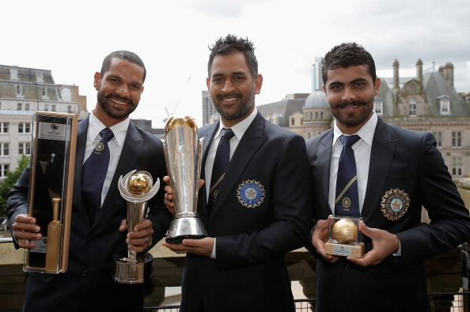Kohli made 43 and Jadeja slammed 33 runs to help India post a competitive total in Birmingham. Ravi Bopara was the hero of the day with the ball for England with figures of 3/20 as he accounted for the prized wickets of Dhawan, Raina, and Dhoni.
Ashwin and Jadeja provided India early breakthrough by removing Alastair Cook and Jonathan Trott. But Eoin Morgan and Ravi Bopara had other ideas as the duo stitched together a 64-run stand to give England more than a chance to fancy their chance to lift the trophy. It was then that MS Dhoni played a masterstroke by bringing Ishant Sharma, who was not having a good day, in the attack.
Ishant, who had leaked 32 runs in his first three overs, dismissed both batsmen and ended England's prolonged search for an international one-day title. Finally, when the last ball was bowled of the 20 over, India won the match by 5 runs and won the ICC Champions Trophy 2013 and celebrated like never before.
Personal Life :
Love for the Bikes
Mahendra Singh Dhoni, former Indian cricket team captain has a massive collection of motorcycles that he has parked in his bike museum. Dhoni has numerous motorcycles ranging from the Suzuki Shogun to the Kawasaki Ninja H2 and Confederate Hellcat.

Ziva
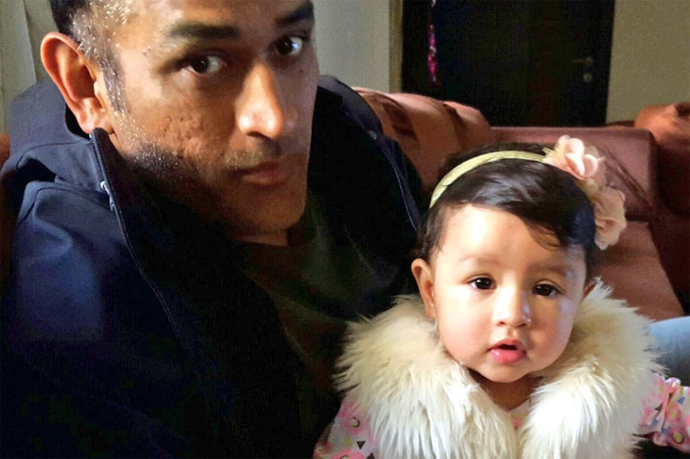
MS Dhoni was leading India in a World Cup in Australia when his wife Sakshi was expecting their first child. She was born on 6th February 2015, two days ahead of India's final warm-up game against Australia. Renowned journalist Rajdeep Sardesai has revealed in his latest book titled ‘Democracy’s XI: The Great Indian Cricket Story’, that Sakshi had to contact Suresh Raina to share the news with Dhoni of daughter Ziva’s birth as Dhoni wasn't carrying a mobile phone with him.
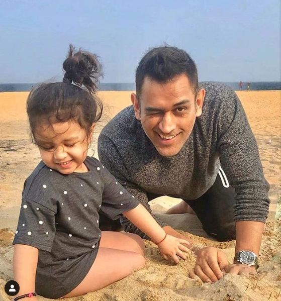During the time of Ziva’s birth, Dhoni was asked by the media whether he missed being in India during his daughter’s birth, to which he replied,”Not really.” Dhoni added, “As of now I am on national duties so I think everything else can wait. The World Cup is a very important campaign.” This shows the kind of dedication and will Dhoni had as the captain of the team. He will go down in history as one of India's most successful captains, who led India to glory in the 2011 World Cup, and also lifted the inaugural T20 World Cup in 2007.
MS Dhoni:The Untold Story
M.S. Dhoni: The Untold Story is a 2016 Indian bollywood biographical sports film written and directed by Neeraj Pandey. It is based on the life of former Test, ODI and T20I captain of the Indian national cricket team, Mahendra Singh Dhoni. The film stars Sushant Singh Rajput as Dhoni, along with Disha Patani, Kiara Advani, and Anupam Kher. The film chronicles the life of Dhoni from a young age through a series of life events.

PLOT :
In the pre-credits sequence there is a scene of the 2011 Cricket World Cup Final. MS Dhoni, India's captain, walks out to bat after Kohli's wicket.
The film begins in Ranchi, 7 July 1981. At the hospital maternity unit, Pan Singh is confused whether he has got a girl or boy. He later names his baby boy Mahendra. Dhoni's father is a pump operator who waters the practice ground. Fourteen years later, Dhoni is spotted by a cricket coach while goalkeeping in a football game. He invites him to try out for the school cricket team as a wicketkeeper and selects him after being impressed. Dhoni improves his batting and becomes a regular member of the team.
Three years later, Dhoni helps win an inter-school cricket match. After achieving much fame, Dhoni is selected for the Ranji Trophy but his draft notice is held up due to which he is late in reaching Kolkata despite his friends' help. But Dhoni does not give up and, to please his father, he joins the Kharagpur Station as a ticket collector. Years later, Dhoni's sister Jayanti is married.
After some time, Dhoni is depressed with his job. With the insistence of his manager, Dhoni decides to play cricket alongside his work, and after his day-shifts he goes to practice cricket. He participates in different tournaments and as a result he gets selected for the Railways. After a good performance, he tries-out for the India national under-19 cricket team selections. Bihar loses to Punjab where Yuvraj Singh scores 301 and Dhoni does not succeed though he is selected for the Duleep Trophy.
Dhoni leaves his job and admits to his father that cricket is his only ambition and he wants to become a professional cricketer. He works hard and is selected in the national team and makes his debut. He meets and befriends Priyanka Jha, an office consultant, and scores a century after meeting her. She buys a watch for him as a Valentine's Day gift but dies in a truck accident on her way. Dhoni again goes into depression and has bad form in the 2007 Cricket World Cup. As captain of the national side, he wins the T-20 World Cup, and leads India to the number one ranking in Test Matches.
In 2010, Dhoni arrives at a hotel. Sakshi Rawat, a hotel official fails to recognize him and later apologizes to him. They soon start dating and Dhoni eventually proposes marriage to her after she mentions buying him a Valentine's Day's gift which he refuses. They marry and Dhoni begins training for the 2011 World Cup. He eventually develops the team with new players. The film returns to the final where Dhoni eases the pressure with a crucial innings. With 4 runs required, Dhoni hits a six and India wins the final. His family, friends and coaches watching the match cry happy tears.
Love for Indian Army
Five times when MS Dhoni showed his love and respect for the Indian Army:
1) When MS Dhoni sported the Balidaan Badge, Indian Army insignia on his glovesMS Dhoni sported the Balidaan badge - regimental dagger insignia of the Indian Para Special Forces during India's World Cup 2019 opener against South Africa. The logo was evident on his wicket-keeping gloves when he stumped a South African batsman during the game. However, he had to give up the right to wear those gloves during the World Cup matches after ICC raised an objection to the same.
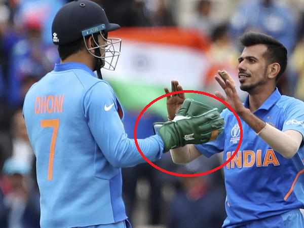 2) When the Indian team sported camouflage caps in an ODI game in RanchiVirat Kohli and his men sported camouflage caps in an ODI game against Australia, earlier this year in Ranchi. MS Dhoni was seen distributing the caps to the players. The Indian team paid tribute to the martyrs of the Pulwama attack by sporting the special caps.
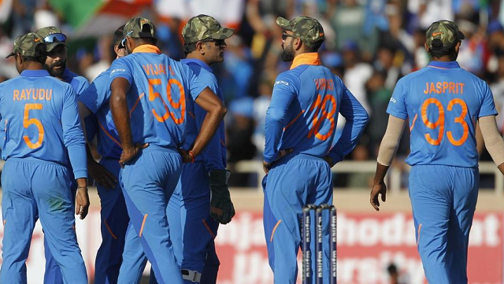 3) When MS Dhoni became a qualified paratrooperMS Dhoni holds the rank of an honorary Lt Colonel in the 106 Para TA battalion. Despite the parachute wings being an honorary commission, the former Indian cricket team captain earned them by completing five parachute training jumps from Indian Army aircraft at Agra training base. Dhoni is a qualified paratrooper, which requires a minimum of five successful parachute jumps.
4) MS Dhoni arrived in his army uniform at the Padma Awards 2018A few pics of my 1st para jump.2nd in line,a bit nervous yeah ofcourse pic.twitter.com/SpanYdebTt
— Mahendra Singh Dhoni (@msdhoni) February 27, 2016
MS Dhoni was honoured with Padma Bhushan, India's third-highest civilian award by President Ram Nath Kovind in 2018. He became only the second cricketer after Sachin Tendulkar to be honoured with the prestigious civilian award. Dressed in his army uniform, Dhoni marched at the ceremony to receive the award.
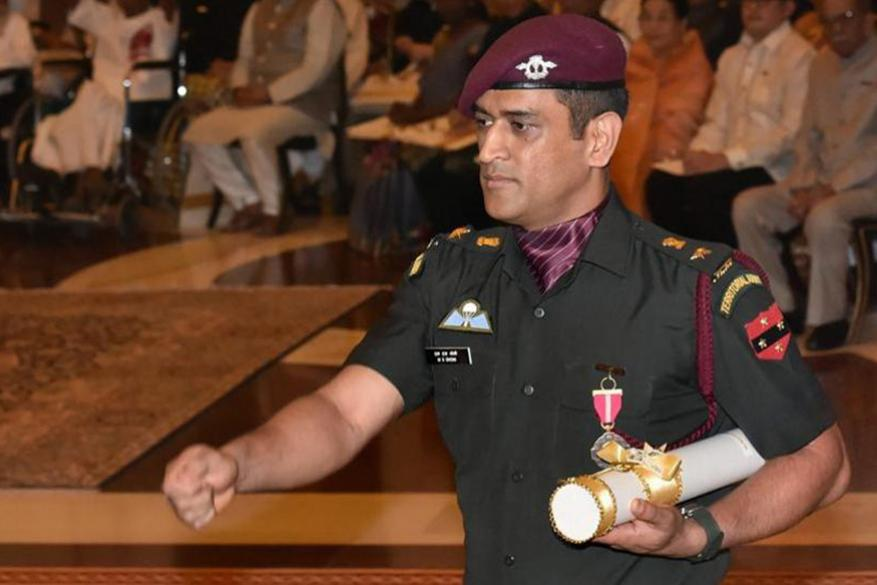 5) MS Dhoni has the Balidaan badge on his cap and phone coverThe World Cup was not the first time that MS Dhoni was sported wearing the Balidaan badge. The Indian Army insignia was engraved on a cap he was spotted wearing during the Indian Premier League (IPL) 2019. Dhoni also has the same logo on his phone cover, as well which shows his admiration for the Armed Forces.
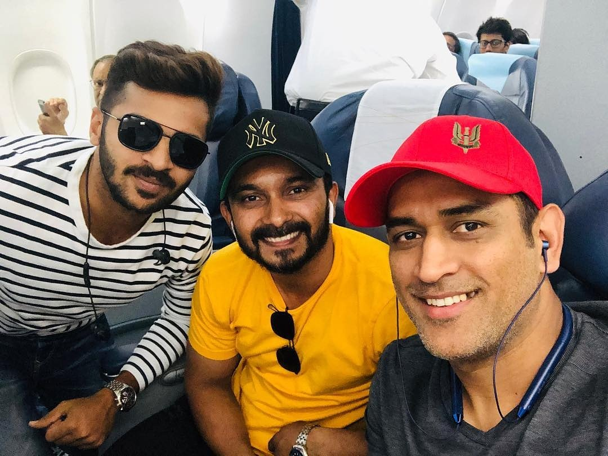"It’s a real honour as I always wanted to be part of the Indian Army. It’s (joining the Indian Army) something that I always wanted to achieve as a kid and now that I have donned the olive greens, my dream has been fulfilled," Dhoni had said at the felicitation ceremony after being conferred with an Honorary rank in the Indian Army in 2011. He had also on a few occasions said that he would like to serve in the army post-retirement.